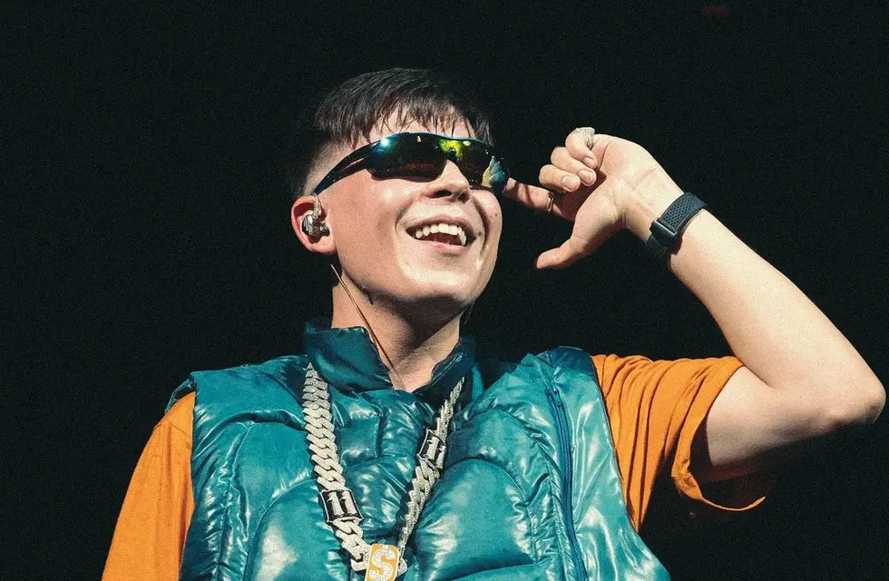

Alejo Acosta se hizo conocido en 2015 cuando formó la competencia de rap El Quinto Escalón con apenas 17 años. En 2016 la competición se popularizó de manera desenfrenada, y se volvería la más importante de Sudamérica, además de ser cuna de muchos artistas emergentes de la escena del trap argentino.
